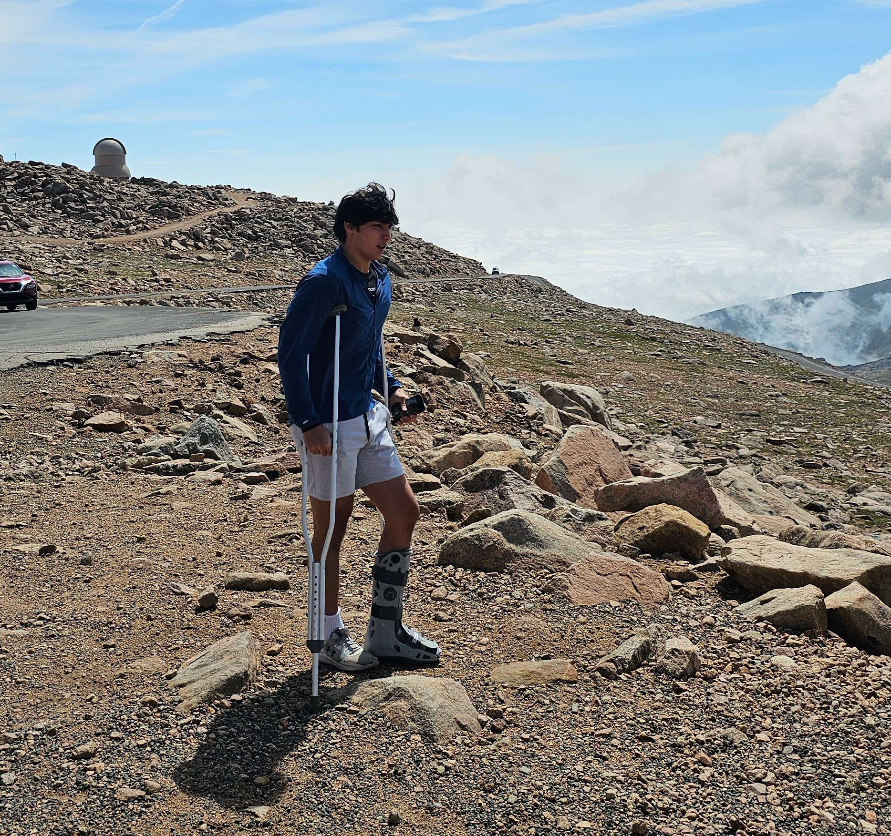
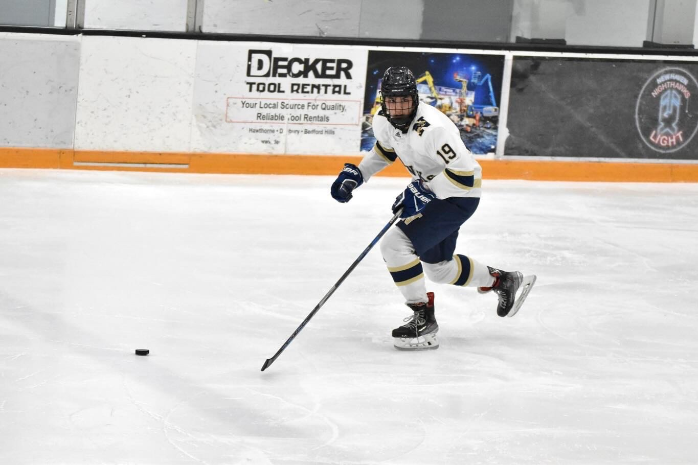
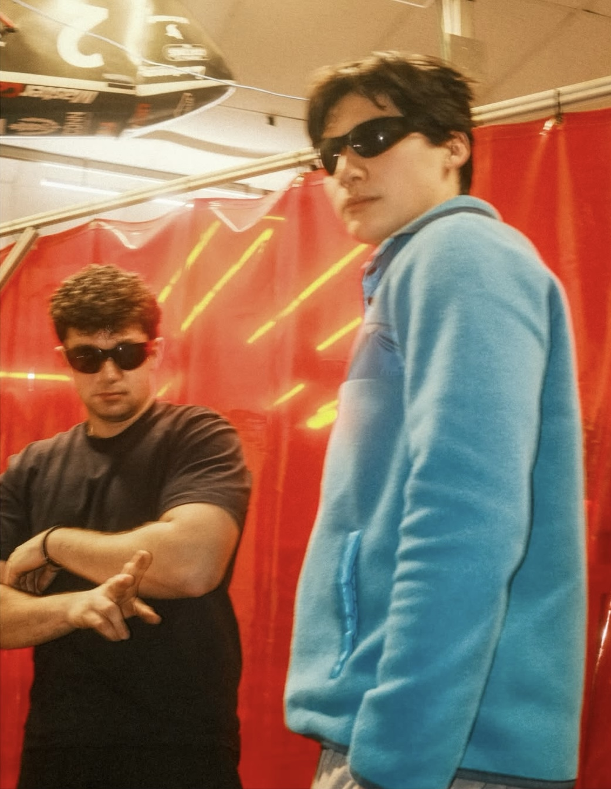
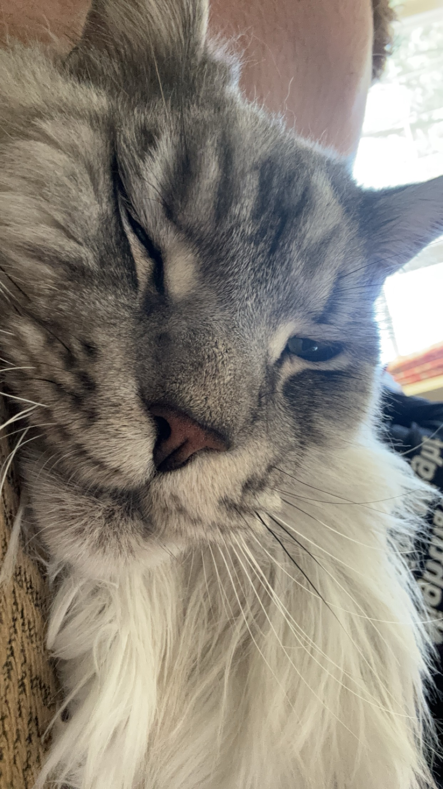
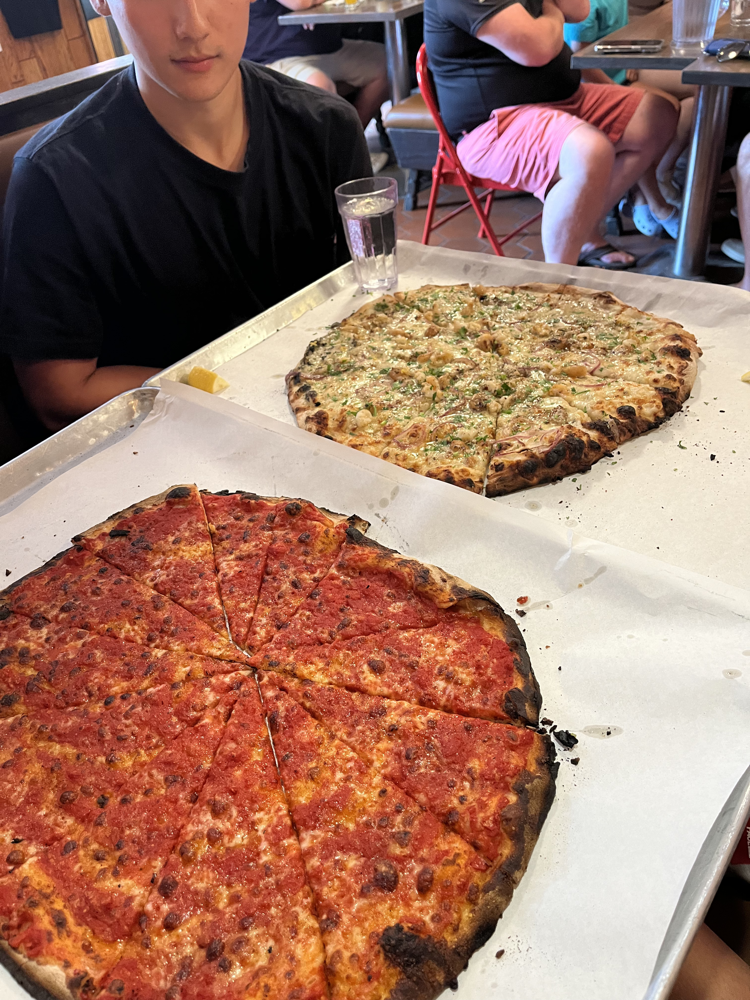
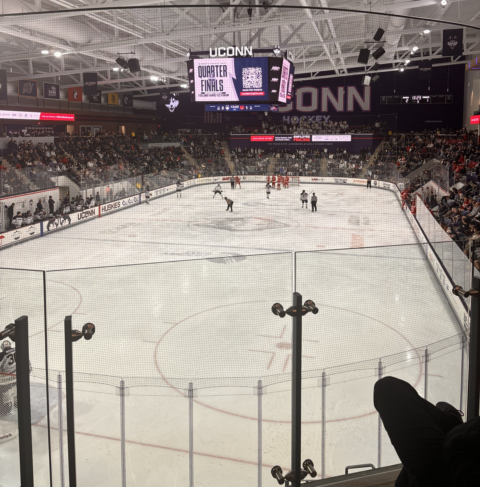
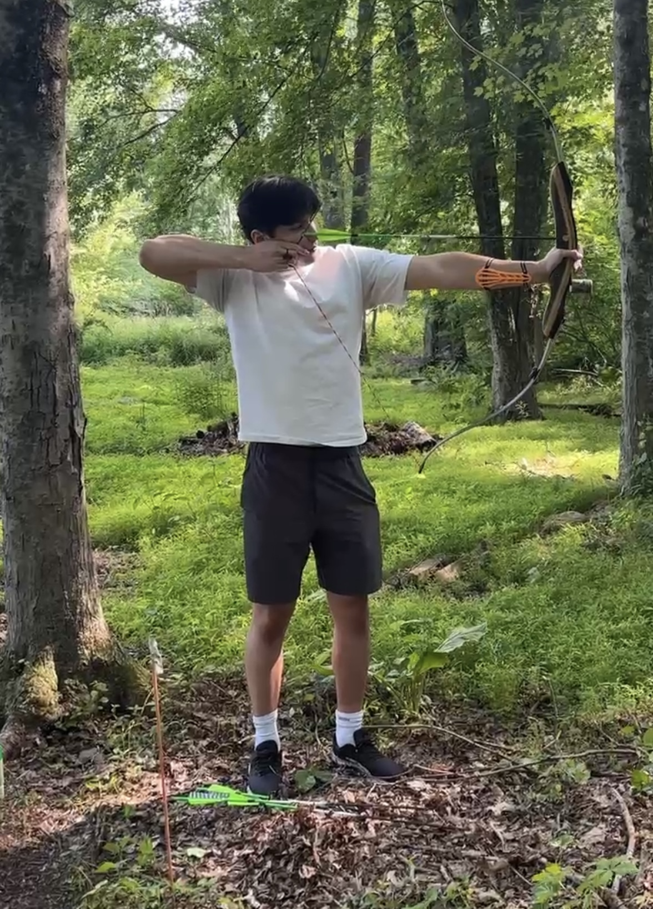
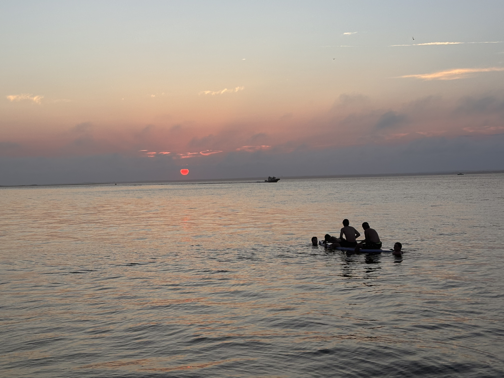

About Me
Hi, I'm Jared.
Growing up, I spent a lot of time with my dad and grandfather, who always seemed to be in the middle of a project. That hands-on curiosity stuck with me, and it's why I'm pursuing a degree in mechanical engineering.
In my free time I like to watch movies, go to the gym, read, and cook food.
Get in Touch
Some cool photos








